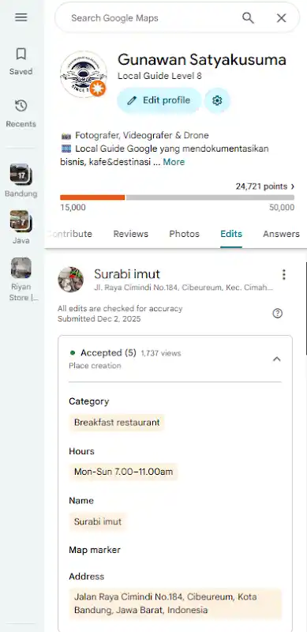

Dokumentasi & Pola SEO Modern Berbasis Aktivitas
``` ```
Catatan G-Loop tentang kelahiran pin “Surabi Imut” di Cimindi Bandung
Di sebuah ruas Jalan Raya Cimindi, Bandung, aroma surabi mengepul setiap pagi. Aktivitasnya nyata: adonan dituang, pembeli datang, percakapan terjadi. Namun sebelum sebuah pin dibuat, semua itu hanya hidup di ruang fisik.
G-Loop melihat momen ini sebagai transisi: bagaimana rutinitas kecil berubah menjadi entitas digital yang dapat ditemukan.
Ritme ini adalah data mentah — tetapi belum terbaca oleh mesin.
Terjadi translasi dari realitas ke struktur digital.
Visual berfungsi sebagai bukti keberadaan. Tanpa foto → data lemah. Dengan foto → data memiliki kepercayaan.
Status accepted membuat entitas mulai hidup di jaringan:
Satu pin memicu:
Tempat kecil berubah menjadi node informasi kolektif.
warung → lokasi → referensi → tujuan
Visibilitas digital tidak eksklusif untuk brand besar. Ia bisa lahir dari tindakan sederhana: membuat pin.